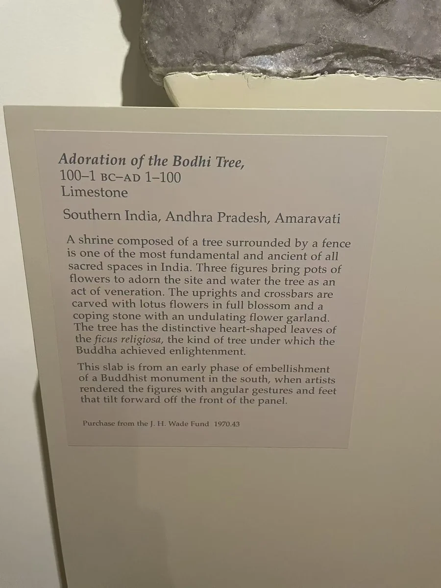
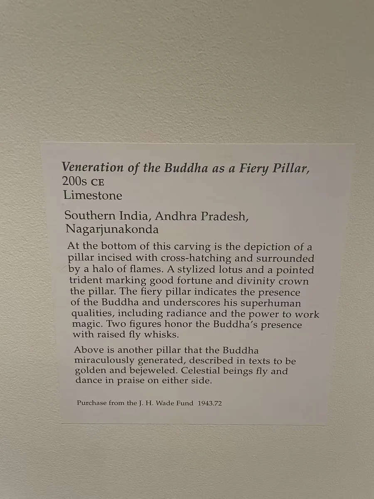

02 / 佛塔周围
树与火：南印度的礼拜图像
圣树与火柱，让人群拥有共同朝向的中心。


图片各自缩放，非实物等比例；尺寸见作品资料。
阿马拉瓦蒂这块浮雕中，树干、枝叶和围栏把画面中心明确划出，人物则从两侧向它聚拢。顺着身体的倾斜和手臂方向看，礼拜的动作比面容更容易读懂。克利夫兰现行馆藏页称它为“圣树前的礼拜者”，并将年代列为约前50年至公元50年。树前的容器和花卉也参与这一场景；馆方把三只盛莲花的器皿联系到供水礼仪。
龙树山的火柱换了一种表现中心的办法。柱身向上延伸，周围的人与建筑衬出它的高度。它没有像前一件那样展开大片枝叶，却同样把礼拜者的动作汇向一个位置。馆方将火柱与佛陀的在场和神变联系起来。画面的重点因此不只是“这是一根什么柱子”，还有周围的人如何对它作出回应。 [1][2]
两件同为石灰岩雕刻，来自安得拉地区的不同遗址，相隔的年代也不短。圣树与火柱适合放在一起看，是因为它们都通过中心物与人群的关系组织神圣空间。近看时，石面上的断裂打断了树枝、人物或边框，礼拜者的朝向却仍然清楚。两种中心形象之下，身体的倾斜与手臂的伸展，让礼敬成为可以读出的动作。
本篇作品
圣树前的礼拜者 · 1970.43
- 原题名
- Worshippers at a Sacred Tree
- 年代
- 约前50年至公元50年
- 材料
- 石灰岩
- 尺寸
- Overall: 80 x 57.1 cm (31 1/2 x 22 1/2 in.)
- 编号
- 1970.43
- 收藏／展出
- 克利夫兰艺术博物馆
- 地域关系
- 归属阿马拉瓦蒂地区
现场展签作前100年至公元100年；此处采用馆方现行约前50年至公元50年的范围与题名。
火柱与礼拜者 · 1943.72
- 原题名
- Worship of the Fiery Pillar
- 年代
- 3世纪
- 材料
- 石灰岩
- 尺寸
- Overall: 59 cm (23 1/4 in.)
- 编号
- 1943.72
- 收藏／展出
- 克利夫兰艺术博物馆
- 地域关系
- 归属龙树山遗址
资料与来源
现场展签



